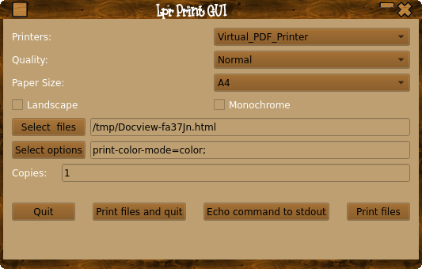
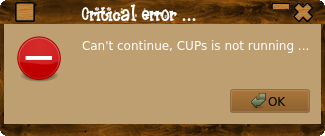

QT5 based frontend for lpr cli command.

This is a simple gui frontend to the lpr command, as qt5 doesn't
play well with cups, if your app allows you to set a print command
you can use this. There are other GUI’s for lp/lpr but they seem
to have large dependencies, or need specific librarary versions,
this application just needs lpr and lpoptions which are part of
CUPS and a reasonable new QT5, which most distros will have
installed as default.
You can also use this as a standalone app to print any file.
You will also of course need a build system ( g++,make qt5 dev
files etc ).
building/installing:
or make INSTALL_ROOT=“/path/to/install/location”
install
You can run the application without needing to install it if you
just want to try it.
App will now exit gracefully if CUPS is not running or there are
no reported printers.

Files to be printed can be selected via the ‘Select Files’ button
or entered into the files box manualy, files should be sepereated
by a colon like so:
/media/LinuxData/Development64/CPPScripts/qt5/hilighting/C++.txt.cpp:/media/LinuxData/Development64/CPPScripts/qt5/hilighting/testqthilite.cpp
Options can be entered into the options box seperated by a colon
eg:
orientation-requested=6:number-up=4
Custom options override prefs and cli options.
Options are printer dependant and can be found with:
lpoptions -p NAMEOFPRINTER
Finished saving and restoring options, have fun!
BUGS etc. kdhedger68713@gmail.com
Get It Here:
LprGui
Back
To Top
Back To Applications